Reject an image by adding its slug to public/charades/charades-actions/reject.txt (append ! to keep it word-only), then re-run node scripts/genimages.mjs.
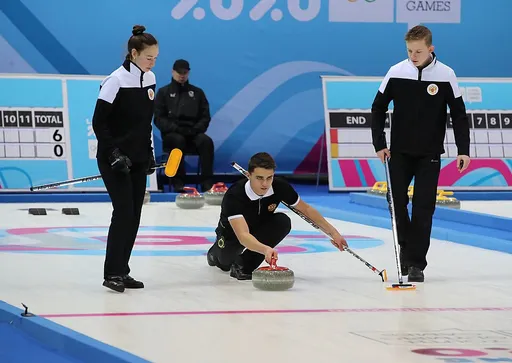
Curling curling CC BY-SA 4.0 · Martin Rulsch, Wikimedia Commons · source
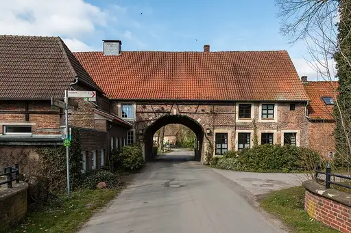
Cycling cycling CC BY-SA 4.0 · Dietmar Rabich · source
Decorator decorator Public domain · William Kurtz · source
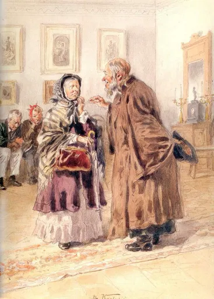
Dentist dentist Public domain · Vladimir Makovsky · source
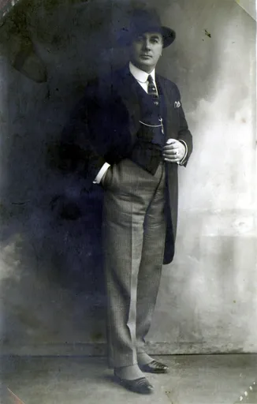
Detective detective CC BY-SA 3.0 · Davide Castro · source
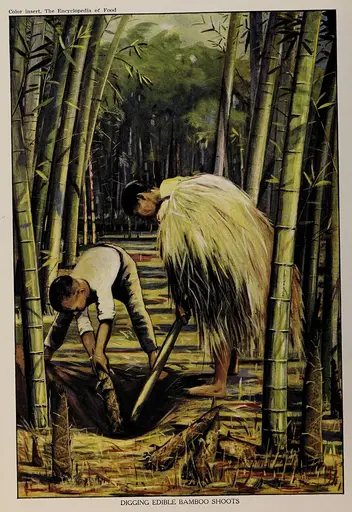
Digging digging Public domain · Artemas Ward · source
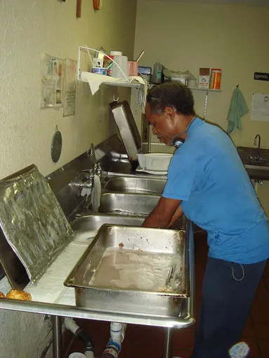
Dishwashing dishwashing Public domain · NancyHeise talk · source
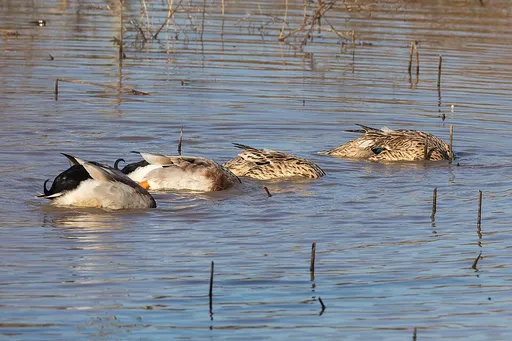
Diving diving CC BY-SA 4.0 · Basile Morin · sourceDoctor doctor CC0 · BEUGRE12 · sourceDog walking dog-walking Public domain · Marmstrong21 · source
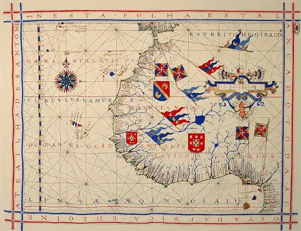
Drawing drawing Public domain · Alvesgaspar · source
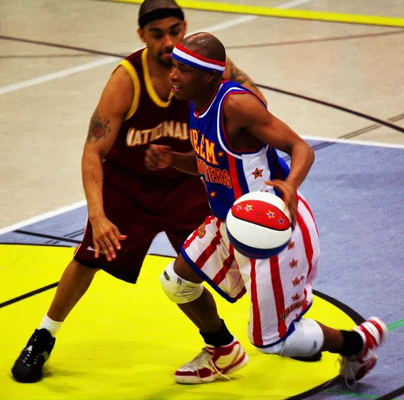
Dribbling dribbling CC BY-SA 3.0 · User.MatthiasKabel · source
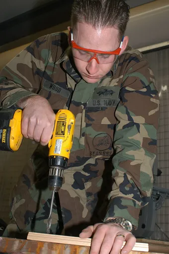
Drilling drilling Public domain · U.S. Navy photo by Photographers' Mate Airman Sara Bohannan. · sourceDrumming drumming CC BY-SA 4.0 · Jaypro events · source
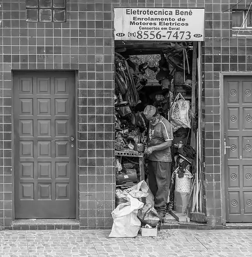
Electrician electrician CC BY-SA 4.0 · Wilfredor · source
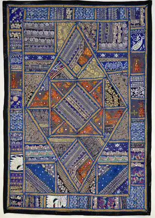
Embroidery embroidery CC BY-SA 4.0 · Yann (talk) · source
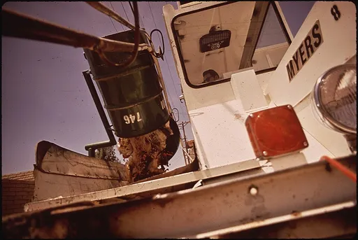
Emptying the trash emptying-the-trash Public domain · Cornelius M. Keyes · source
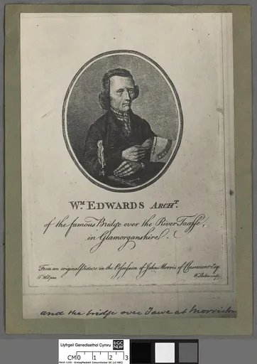
Engineer engineer Public domain · William Skelton · source